قد تظهر رسالة زرقاء Windows protected your PC — هذا طبيعي لأن البرنامج غير موقّع بشهادة.
اضغط More info ثم Run anyway.
اتبع خطوات التثبيت ثم اضغط إنهاء.
سيظهر اختصار «سابر ماركو» على سطح المكتب وفي قائمة ابدأ.
تحديث البرنامج: عند صدور إصدار جديد ثبّته فوق القديم مباشرة — بياناتك تبقى كما هي ويُحدّث البرنامج قاعدة البيانات تلقائيًا.
مكان البيانات: بيانات المحل محفوظة على الجهاز في مجلد البرنامج، ولا تُحذف عند إزالة البرنامج أو تحديثه. ومع ذلك احفظ نسخة احتياطية على فلاشة (الفصل 12).
2
تجهيز المحل
أول مرة تفتح البرنامج يظهر معالج من 5 خطوات
الخطوة 1 — أهلًا بك: تبدأ الفترة التجريبية (20 يومًا). اضغط التالي.
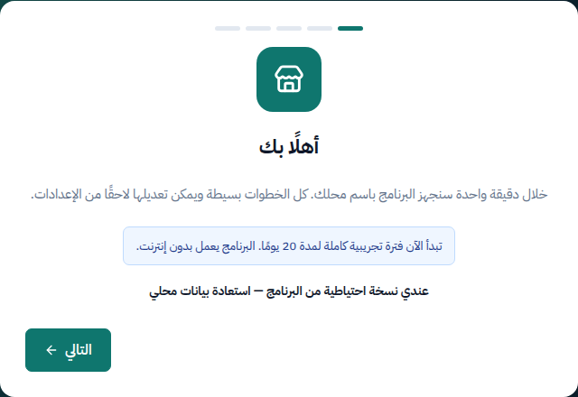
شاشة الترحيب
عندك جهاز قديم عليه البرنامج؟ اضغط «عندي نسخة احتياطية من البرنامج — استعادة بيانات محلي» واختر ملف النسخة من الفلاشة، فتنتقل كل بياناتك للجهاز الجديد.
الخطوة 2 — بيانات المحل: اسم المحل ورقم الهاتف (يظهران على الفاتورة).
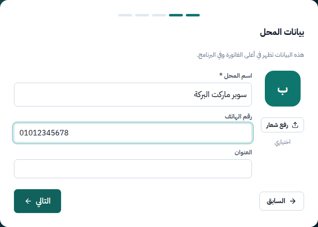
بيانات المحل
الخطوة 3 — العملة والطباعة وطريقة العمل:
نوع الطابعة: حرارية 80 مم (الأكثر شيوعًا)، أو 58 مم، أو ورق A4.
الوضع البسيط: للبقالة والميني ماركت — بيع، مخزون، مشتريات، تقارير.
الوضع المتقدم: للسوبر ماركت — يضيف تواريخ الصلاحية والدفعات، طلبات الشراء، أسعار الجملة، العروض، وأكثر من مكان تخزين.
ينطبق على أي منتج: شيبسي (كيس / كرتونة 24)، لبن (علبة / كرتونة 12)، مناديل (باكو / شوال)، زيت (زجاجة / كرتونة). في البيع يُضاف الكيس أو الكانز بضغطة واحدة بلا أي سؤال، وفي الشراء والجرد تتعامل بالكرتونة.
اختر وحدة البيع صح من البداية: «الزبون بياخد منه» هي أصغر وحدة تبيعها، ولا يمكن تغييرها بعد تسجيل حركات للمنتج. لو سجلت منتجًا بوحدة خطأ: أوقفه وأضفه من جديد.
سعر بيع الكرتونة كاملة (جملة) وباركودها اختياريان. البرنامج ينبهك لو سعر الكرتونة أقل من تكلفتها (خسارة) أو أغلى من شراء القطع منفصلة.
منتج بالوزن (جبنة، لحوم، بقوليات سائبة)
في «بيتباع إزاي؟» اختر بالوزن (كيلو).
اكتب سعر بيع الكيلو وسعر شراء الكيلو والكمية الموجودة بالكيلو.
عند البيع يطلب البرنامج الوزن بالجرام أو المبلغ.
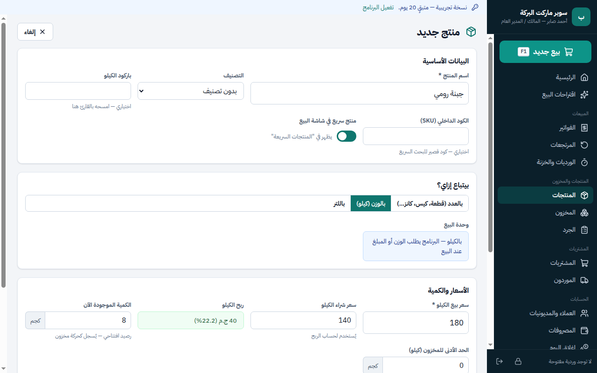
منتج بالوزن — السعر لكل كيلو
صفحة المنتج وقائمة المنتجات
بعد الحفظ تفتح صفحة المنتج: المخزون الحالي (مثلًا «125 كانز — 10 دستة + 5 كانز»)، والوحدات، وسجل الحركات والأسعار.
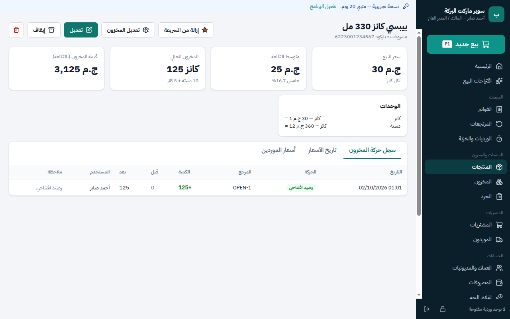
صفحة المنتج
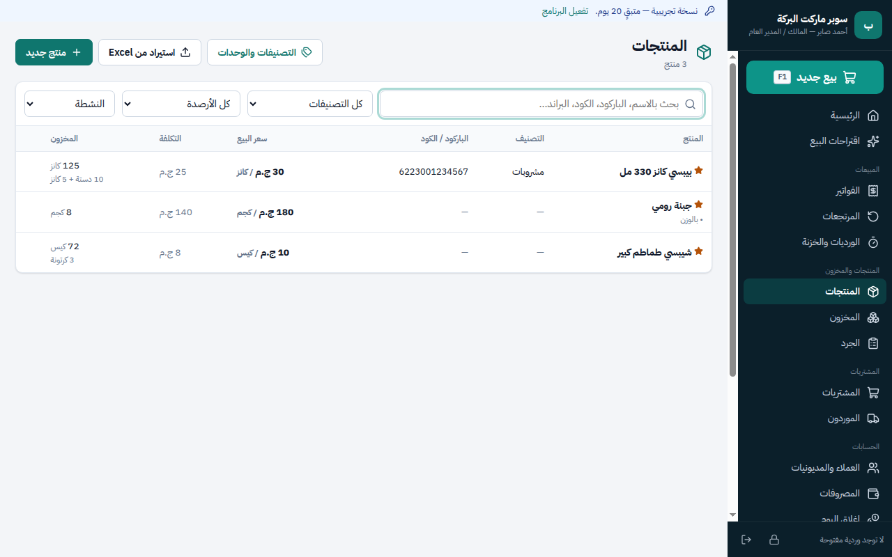
قائمة المنتجات — بحث، فلترة بالتصنيف والمخزون، واستيراد من Excel
عندك منتجات كثيرة؟ من صفحة المنتجات اضغط «استيراد من Excel» لإدخالها مرة واحدة.
6
الموردون وفواتير الشراء
كل بضاعة تدخل المحل تُسجل بفاتورة شراء
إضافة مورد
من القائمة: الموردون ← مورد جديد ← الاسم والهاتف ← حفظ. يتابع البرنامج رصيد كل مورد (المستحق له).
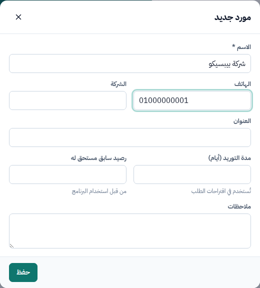
مورد جديد
فاتورة شراء
المشتريات ← فاتورة شراء جديدة (أو «شراء بضاعة» من الرئيسية).
اختر المورد (أو «بدون مورد» للشراء النقدي السريع).
ابحث عن المنتج بالاسم أو امسح الباركود ثم Enter.
الوحدة تفتح على الدستة / الكرتونة تلقائيًا: اكتب عدد الكراتين وسعر شراء الكرتونة — يظهر «5 × 12 = 60 كانز».
اكتب المدفوع الآن؛ الباقي يُضاف لحساب المورد.
اضغط حفظ فاتورة الشراء ← يزيد المخزون وتتحدث التكلفة تلقائيًا.
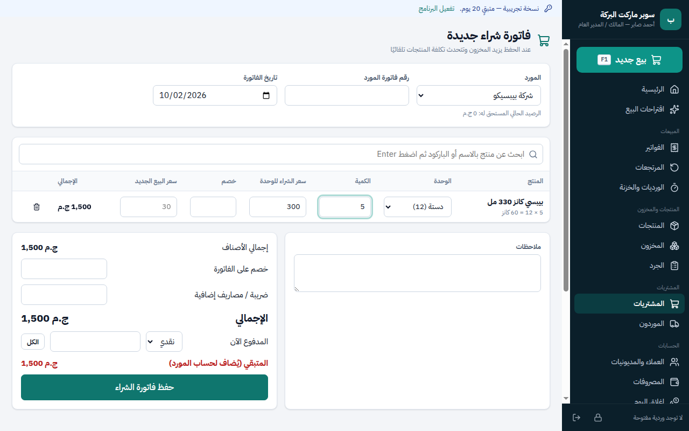
شراء 5 دستة بيبسي بـ 300 للدستة = 60 كانز للمخزون
في الوضع المتقدم يظهر لكل منتج له صلاحية خانة تاريخ الصلاحية ورقم الدفعة — اكتبها من على الكرتونة. البرنامج يبيع الأقرب انتهاءً أولًا، ويمنع بيع المنتهي.
7
البيع
أهم شاشة في البرنامج — مصممة للعمل السريع من لوحة المفاتيح
فتح الوردية
أول مرة تفتح بيع جديد في اليوم يطلب البرنامج المبلغ الموجود في الدرج (الفكة) لبدء الوردية. اكتبه واضغط «فتح الوردية وبدء البيع».
عند اختيار منتج بالوزن تظهر نافذة: اكتب الوزن بالجرام (أو اختر 100 / 250 / 500…)، أو بالمبلغ (الزبون عايز بـ 50 جنيه) — ثم إضافة.
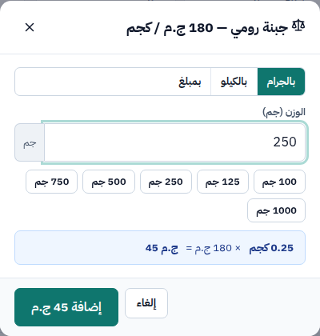
250 جم جبنة رومي = 45 ج.م
اختصارات لوحة المفاتيح
الزر
الوظيفة
الزر
الوظيفة
F1
بيع جديد
F6
تعليق الفاتورة (زبون نسي حاجة)
F2
البحث عن منتج
F7
الفواتير المعلقة
F3
تعديل الكمية
F8
خصم على الفاتورة كلها
F4
خصم على صنف
F9
الدفع
Del
حذف السطر المحدد
Esc
إلغاء / رجوع
الدفع
اضغط F9 أو زر الدفع.
اختر طريقة الدفع: نقدي أو كارت أو محفظة أو آجل (على حساب عميل).
اكتب المبلغ المستلم أو اضغط أحد الأزرار الجاهزة — يظهر الباقي للعميل.
Enter أو تأكيد وحفظ الفاتورة.
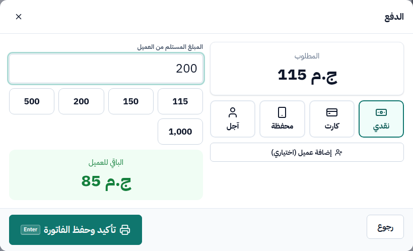
الدفع: المطلوب 115، المستلم 200، الباقي 85
بعد الحفظ تظهر الفاتورة: طباعة (Ctrl+P) أو حفظ PDF، وEnter لبدء فاتورة جديدة.
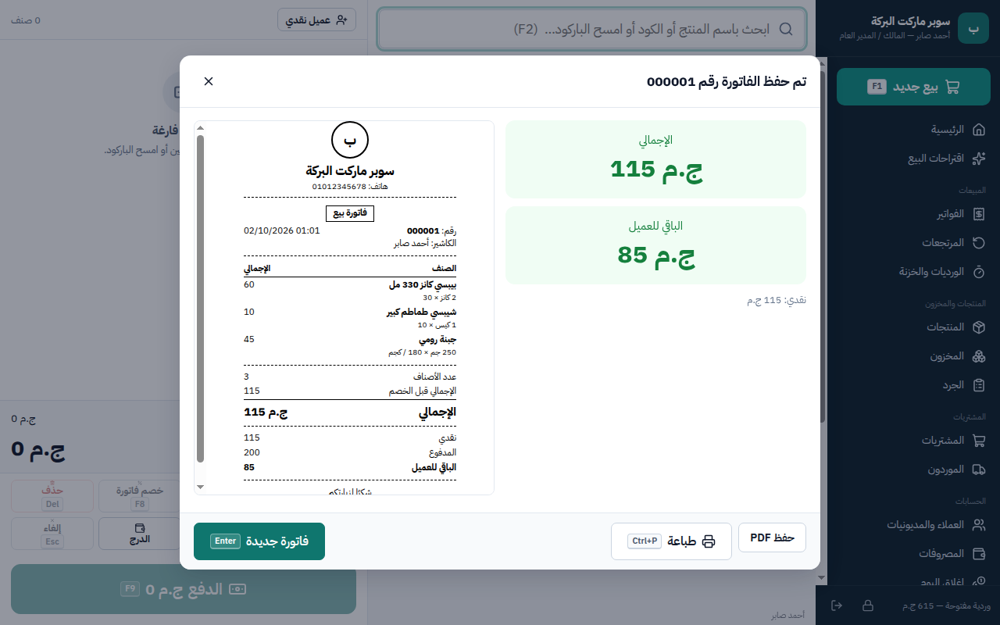
الفاتورة جاهزة للطباعة
البيع الآجل: اختر «آجل» واختر العميل — يُسجل الدين في «العملاء والمديونيات». يمكن تحديد حد أقصى لمديونية كل عميل.
الخصومات الكبيرة: الكاشير له حد خصم؛ لو تجاوزه يطلب البرنامج موافقة المدير باسمه وكلمة مروره، ويسجّل من وافق.
8
الفواتير والمرتجعات
كل فاتورة محفوظة ويمكن الرجوع لها
من القائمة: الفواتير ← ابحث برقم الفاتورة أو التاريخ ← اضغط على الفاتورة لعرضها، طباعتها مرة أخرى، أو عمل مرتجع.
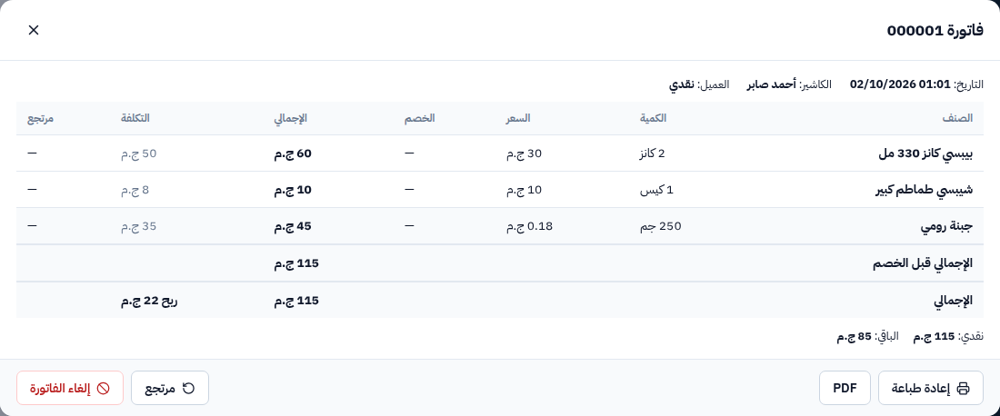
تفاصيل الفاتورة
مرتجع من فاتورة
من الفاتورة اضغط مرتجع.
اكتب الكمية المرتجعة لكل صنف (أو الكل). «يرجع للمخزون؟» — اترك العلامة لو المنتج سليم، وألغها لو تالف.
اختر طريقة رد المبلغ واكتب السبب ← تأكيد المرتجع.
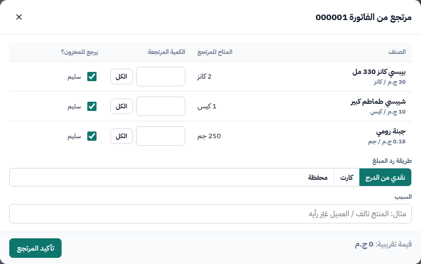
مرتجع جزئي من فاتورة
9
الجرد
قارن الموجود على الرف بالموجود في البرنامج
الجرد ← بدء جرد جديد ← كل المنتجات أو تصنيف واحد (مثلًا المشروبات).
لكل منتج اكتب الموجود فعلًا. المنتجات التي لها كرتونة تُعد هكذا: [14] دستة + [2] كانز.
يظهر الفرق وقيمته فورًا (بالسالب = عجز).
عند الانتهاء اعتماد الجرد ← يُصحح المخزون ويُسجل الفرق. الأصناف التي لم تُعد لا تتغير.
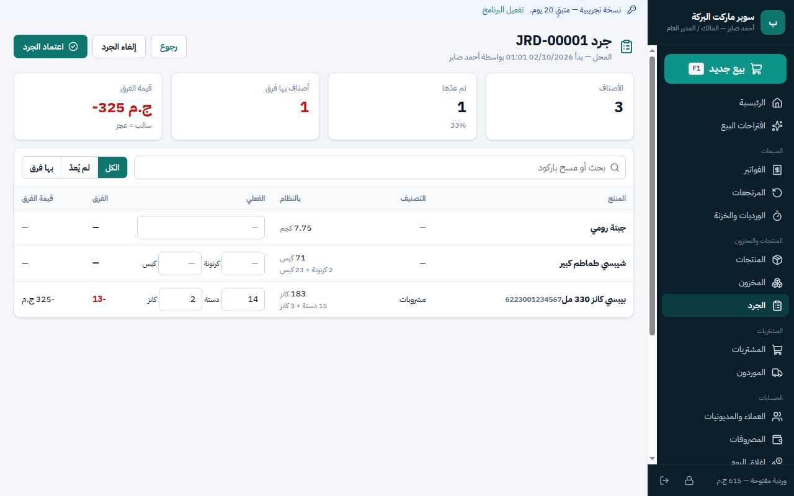
الجرد بالدستة والكانز — النظام يعرض الرصيد بنفس الشكل
يمكنك الاستمرار في البيع أثناء الجرد. ابدأ بتصنيف واحد كل أسبوع بدل جرد المحل كله مرة واحدة.
10
المستخدمون والصلاحيات
لكل شخص اسم دخول خاص
المستخدمون والصلاحيات ← مستخدم جديد.
الاسم، اسم الدخول، كلمة المرور، والدور: كاشير أو مدير أو أمين مخزن…
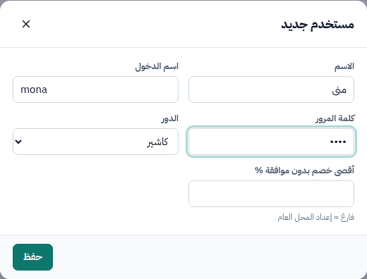
إضافة كاشير
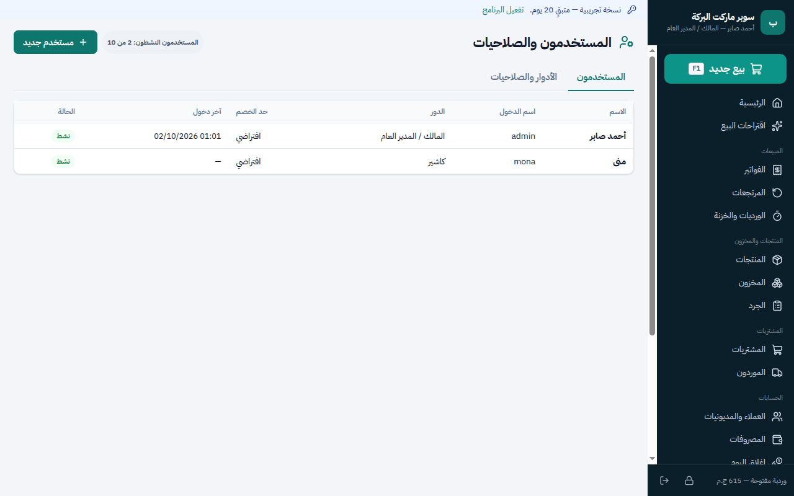
قائمة المستخدمين
الكاشير يرى شاشة البيع وورديته فقط — لا يرى التكلفة ولا الأرباح ولا يعدّل الأسعار.
العمليات الحساسة (خصم كبير، إلغاء فاتورة، بيع آجل) تحتاج موافقة مدير وتُسجل في سجل العمليات.
عند ترك الجهاز اضغط زر القفل أسفل القائمة.
11
الورديات وإغلاق اليوم
آخر اليوم: عد الدرج وأغلق
الوردية
الورديات والخزنة تعرض ورديتك: النقدية المتوقعة في الدرج، المبيعات، طرق الدفع. من هنا: سحب / إضافة نقدية (مصروف سريع أو تغذية فكة) وإغلاق الوردية: تعد النقدية الفعلية ويحسب البرنامج العجز أو الزيادة.
إغلاق اليوم يجمع اليوم كله: صافي المبيعات، تكلفة البضاعة، مجمل الربح، المصروفات، صافي الربح، المقبوض بكل طريقة، والورديات. راجع الأرقام ثم إغلاق اليوم (ويمكن طباعته).
حفظ نسخة على فلاشة: الأهم — لو تعطل الجهاز أو القرص تبقى بياناتك سليمة.
نسخ احتياطي تلقائي ونسخة عند إغلاق اليوم: فعّلهما — البرنامج يحفظ ويتحقق من كل نسخة ويحتفظ بآخر 30.
استعادة نسخة: يأخذ البرنامج نسخة أمان من البيانات الحالية قبل الاستبدال، ويرفض أي ملف تالف.
مرة في الأسبوع على الأقل: «حفظ نسخة على فلاشة» واحتفظ بالفلاشة بعيدًا عن الجهاز. البرنامج يذكّرك لو مرت 7 أيام بلا نسخة.
جهاز جديد؟ ثبّت البرنامج، وفي أول شاشة اختر «عندي نسخة احتياطية» واختر ملف النسخة من الفلاشة.
13
الإعدادات والطابعة
الإعدادات (للمدير)
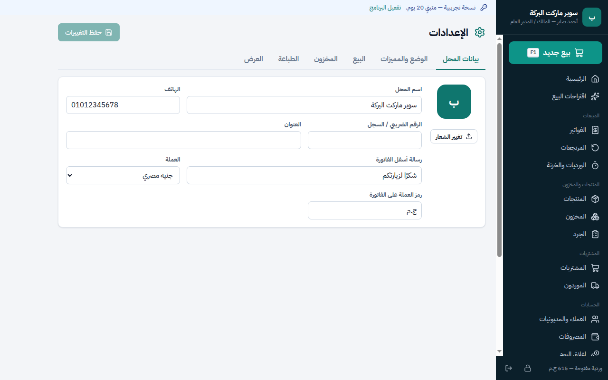
الإعدادات
التبويب
ماذا تضبط فيه
بيانات المحل
الاسم، الهاتف، العنوان، الشعار، رسالة أسفل الفاتورة، العملة.
الوضع والمميزات
البسيط / المتقدم، وتشغيل المميزات: الصلاحية، أسعار الجملة، العروض، أكثر من مكان تخزين.
البيع
أقصى خصم للكاشير بدون موافقة مدير، مدة قبول المرتجع، بادئة رقم الفاتورة، تقريب الإجمالي، الضريبة، باركود الميزان.
المخزون
أيام تنبيه الصلاحية (7 / 30 / 90)، متى يعتبر المنتج راكدًا، ومدة تغطية اقتراحات الطلب.
الطباعة
نوع الورق: حراري 80 مم أو 58 مم أو A4، واختيار الطابعة، وعدد النسخ.
العرض
شكل الأرقام وحجم الخط.
قبل أول يوم بيع: اطبع فاتورة تجربة على طابعتك وتأكد من العرض والخط. لو الكلام مقطوع غيّر نوع الورق (80 ↔ 58).
14
بعد ما المحل يشتغل
صور من محل بعد عدة أشهر من الاستخدام
الرئيسية والتنبيهات
تتحول الرئيسية لملخص ذكي: «ماذا يحتاج المحل هذا الشهر؟» (صلاحية قريبة، مخزون راكد، طلب مقترح من المورد، عرض مقترح)، و«يحتاج انتباهك» مثل: «⚠️ يوجد 72 قطعة من زبادي جهينة ستنتهي خلال 5 أيام».
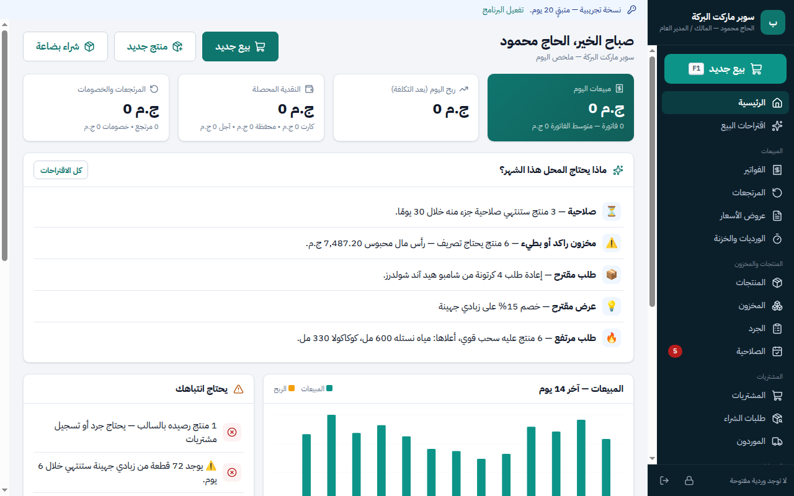
الرئيسية في محل يعمل منذ أشهر
الصلاحية (الوضع المتقدم)
شاشة الصلاحية تعرض كل دفعة: منتهي / قريب جدًا (7 أيام) / قريب (30) / متابعة (90)، مع الكمية والمورد والقيمة والأيام المتبقية والإجراء المقترح. من نفس الصف: إرجاع للمورد (من الدفعة نفسها) أو إعدام.
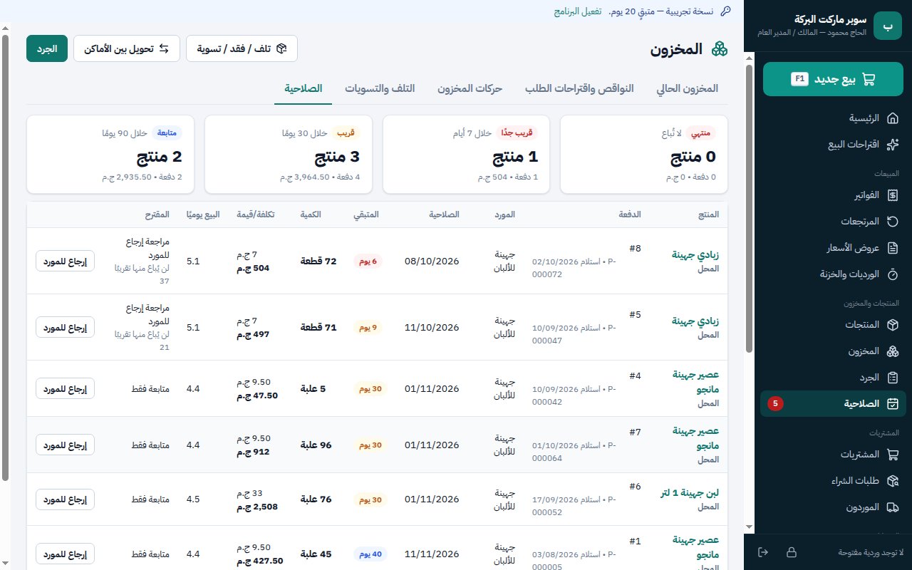
الصلاحية
البرنامج يمنع بيع أي كمية منتهية الصلاحية ويخرج الأقرب انتهاءً أولًا تلقائيًا.
اقتراحات البيع
يحلل البرنامج مبيعات آخر 30 يومًا: ما الذي عليه سحب قوي، ما الراكد، ما يُشترى معًا، ويقترح عروضًا محسوبة ربحيتها. لا يُفعَّل أي عرض أو سعر بدون موافقتك.